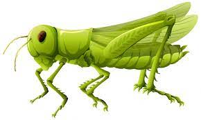
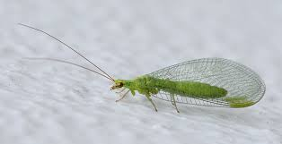
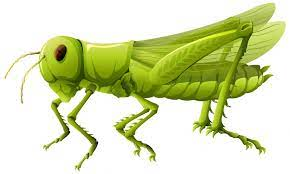
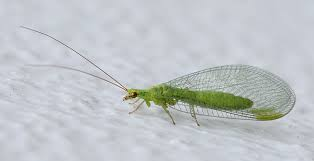
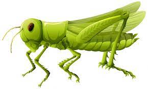
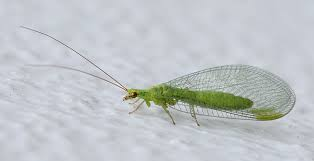
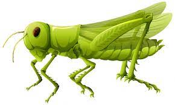
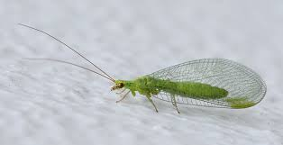

| Letter | Insect | City | River |
|---|---|---|---|
| V | Velvet | Varanasi | Vamsadhara |
| A | Ant | Amristsar | Alakananda |
| N | Netwing | Nalgonda | Narmada |
| G | Grasshopper | Gurgaon | Ganga |
| A | Aphid | Amaravathi | Adyar |
| R | Robber fly | Raipur | Ravis |
Ants are eusocial insects of the family Formicidae and, along with the related wasps and bees, belong to the order Hymenoptera. Ants evolved from vespoid wasp ancestors in the Cretaceous period. More than 13,800 of an estimated total of 22,000 species have been classified. They are easily identified by their geniculate (elbowed) antennae and the distinctive node-like structure that forms their slender waists.
AboutGrasshoppers are a group of insects belonging to the suborder Caelifera. They are among what is possibly the most ancient living group of chewing herbivorous insects, dating back to the early Triassic around 250 million years ago.
AboutNet-winged beetle, (family Lycidae), any of some 2,800 species of soft-bodied, brightly coloured, predominately tropical beetles (insect order Coleoptera) whose wing covers, or elytra, are broader at the tip than at the base and are characterized by a raised network of lines, or veins. The adults feed either on plant juices or on other insects and can easily be seen as they fly slowly between plants or crawl on flowers.
About